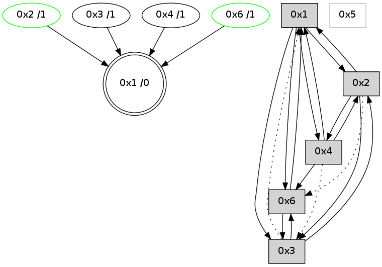

>> << IDX [start] -100 -25 -5 +0 +5 +25 +100 [745.201398134]
 Previous packets
----------------------------------------------------------------------
740.280321 beacon01(adaf) #0 coord=01,02,05,03,04,06 cycle=432.0ms assoc
-- color-indic=0 64 f7 cc
740.290282 beacon02(adaf) #0 coord=01,02,05,03,04,06 cycle=432.0ms assoc 64 a6 33
740.300283 beacon05(adaf) #0 coord=01,02,05,03,04,06 cycle=432.0ms assoc 64 00 19
740.310283 beacon03(adaf) #0 coord=01,02,05,03,04,06 cycle=432.0ms assoc 64 9c 3d
740.320282 beacon04(adaf) #0 coord=01,02,05,03,04,06 cycle=432.0ms assoc 64 3a 17
740.330284 beacon06(adaf) #0 coord=01,02,05,03,04,06 cycle=432.0ms assoc 64 4e 0b
740.342065 [STC(2)->1 #0.41 stable,to-color d=1]
740.344107 [Hello(1): seq=442 sym=2,4,6 sysInfo= stat=2:11,0,9,11/4:1,0,2,0/6:7,0,6,7]
740.345841 [Hello(4): seq=543 sym=6,1,2 sysInfo= stat=6:2,0,2,2/1:8,0,2,0/2:9,0,3,4]
740.347633 [Hello(3): seq=541 sym=2,1,6 sysInfo=hasWarning stat=2:3,0,2,4/1:9,0,14,0/6:7,0,2,2]
740.349511 [STC(4)->1 #0.41 to-color d=1]
740.351441 [STC(3)->1 #0.41 to-color d=1]
740.355938 [TreeStatus(2)-.->1 #0.41 stable child=1]
----------------------------------------------------------------------
740.772429 beacon01(adaf) #0 coord=01,02,05,03,04,06 cycle=432.0ms assoc
-- color-indic=0 64 33 a3
740.782391 beacon02(adaf) #0 coord=01,02,05,03,04,06 cycle=432.0ms assoc 64 62 5c
740.792391 beacon05(adaf) #0 coord=01,02,05,03,04,06 cycle=432.0ms assoc 64 c4 76
740.802390 beacon03(adaf) #0 coord=01,02,05,03,04,06 cycle=432.0ms assoc 64 58 52
740.812391 beacon04(adaf) #0 coord=01,02,05,03,04,06 cycle=432.0ms assoc 64 fe 78
740.822392 beacon06(adaf) #0 coord=01,02,05,03,04,06 cycle=432.0ms assoc 64 8a 64
740.834070 [Hello(2): seq=1034 sym=1,3 sysInfo= stat=1:1,0,0,0/3:8,0,2,1]
740.837813 [Hello(6): seq=457 sym=3,1 sysInfo=hasWarning stat=3:10,0,1,0/1:2,0,3,0]
----------------------------------------------------------------------
741.264536 beacon01(adaf) #0 coord=01,02,05,03,04,06 cycle=432.0ms assoc
-- color-indic=0 64 7f 13
741.274497 beacon02(adaf) #0 coord=01,02,05,03,04,06 cycle=432.0ms assoc 64 2e ec
741.284497 beacon05(adaf) #0 coord=01,02,05,03,04,06 cycle=432.0ms assoc 64 88 c6
741.294497 beacon03(adaf) #0 coord=01,02,05,03,04,06 cycle=432.0ms assoc 64 14 e2
741.304498 beacon04(adaf) #0 coord=01,02,05,03,04,06 cycle=432.0ms assoc 64 b2 c8
741.314497 beacon06(adaf) #0 coord=01,02,05,03,04,06 cycle=432.0ms assoc 64 c6 d4
741.325626 [Hello(1): seq=443 sym=2,4,6 sysInfo= stat=2:12,0,9,11/4:2,0,3,0/6:8,0,6,7]
741.329823 [Hello(4): seq=544 sym=6,1,2 sysInfo= stat=6:3,0,2,3/1:8,0,2,0/2:10,0,3,4]
----------------------------------------------------------------------
741.756644 beacon01(adaf) #0 coord=01,02,05,03,04,06 cycle=432.0ms assoc
-- color-indic=0 64 bb 7c
741.766605 beacon02(adaf) #0 coord=01,02,05,03,04,06 cycle=432.0ms assoc 64 ea 83
741.776605 beacon05(adaf) #0 coord=01,02,05,03,04,06 cycle=432.0ms assoc 64 4c a9
741.786606 beacon03(adaf) #0 coord=01,02,05,03,04,06 cycle=432.0ms assoc 64 d0 8d
741.796605 beacon04(adaf) #0 coord=01,02,05,03,04,06 cycle=432.0ms assoc 64 76 a7
741.806605 beacon06(adaf) #0 coord=01,02,05,03,04,06 cycle=432.0ms assoc 64 02 bb
741.818318 [Hello(2): seq=1035 sym=1,3 asym=6 sysInfo= stat=1:2,0,0,0/3:9,0,2,1/6:0,0,0,0]
----------------------------------------------------------------------
742.248751 beacon01(adaf) #0 coord=01,02,05,03,04,06 cycle=432.0ms assoc
-- color-indic=0 64 35 69
742.258714 beacon02(adaf) #0 coord=01,02,05,03,04,06 cycle=432.0ms assoc 64 64 96
742.268712 beacon05(adaf) #0 coord=01,02,05,03,04,06 cycle=432.0ms assoc 64 c2 bc
742.278713 beacon03(adaf) #0 coord=01,02,05,03,04,06 cycle=432.0ms assoc 64 5e 98
742.288713 beacon04(adaf) #0 coord=01,02,05,03,04,06 cycle=432.0ms assoc 64 f8 b2
742.298713 beacon06(adaf) #0 coord=01,02,05,03,04,06 cycle=432.0ms assoc 64 8c ae
742.309808 [Hello(1): seq=444 sym=2,3,4,6 sysInfo= stat=2:13,0,9,11/3:0,0,0,0/4:2,0,3,0/6:8,0,6,7]
742.312322 [STC(1) #0.42 to-color d=0]
742.314058 [Hello(4): seq=545 sym=6,1,2 sysInfo= stat=6:4,0,2,3/1:8,0,2,0/2:10,0,3,4]
----------------------------------------------------------------------
742.740859 beacon01(adaf) #0 coord=01,02,05,03,04,06 cycle=432.0ms assoc
-- color-indic=0 64 f1 06
742.750820 beacon02(adaf) #0 coord=01,02,05,03,04,06 cycle=432.0ms assoc 64 a0 f9
742.760819 beacon05(adaf) #0 coord=01,02,05,03,04,06 cycle=432.0ms assoc 64 06 d3
742.770820 beacon03(adaf) #0 coord=01,02,05,03,04,06 cycle=432.0ms assoc 64 9a f7
742.780819 beacon04(adaf) #0 coord=01,02,05,03,04,06 cycle=432.0ms assoc 64 3c dd
742.790821 beacon06(adaf) #0 coord=01,02,05,03,04,06 cycle=432.0ms assoc 64 48 c1
742.802912 [Hello(6): seq=459 sym=3,1 sysInfo=hasWarning stat=3:12,0,1,0/1:4,0,4,0]
742.805817 [STC(6)->1 #0.42 stable,to-color d=1]
742.808371 [Hello(2): seq=1036 sym=1,3 asym=6 sysInfo= stat=1:3,0,1,0/3:10,0,2,1/6:0,0,0,0]
742.811464 [STC(2)->1 #0.42 stable,to-color d=1]
742.812720 [TreeStatus(6)-.->1 #0.42 stable child=1]
742.814678 [TreeStatus(2)-.->1 #0.42 stable child=1]
----------------------------------------------------------------------
743.232967 beacon01(adaf) #0 coord=01,02,05,03,04,06 cycle=432.0ms assoc
-- color-indic=0 64 bd b6
743.242929 beacon02(adaf) #0 coord=01,02,05,03,04,06 cycle=432.0ms assoc 64 ec 49
743.252929 beacon05(adaf) #0 coord=01,02,05,03,04,06 cycle=432.0ms assoc 64 4a 63
743.262928 beacon03(adaf) #0 coord=01,02,05,03,04,06 cycle=432.0ms assoc 64 d6 47
743.272929 beacon04(adaf) #0 coord=01,02,05,03,04,06 cycle=432.0ms assoc 64 70 6d
743.282928 beacon06(adaf) #0 coord=01,02,05,03,04,06 cycle=432.0ms assoc 64 04 71
743.294398 [Hello(1): seq=445 sym=2,3,4,6 sysInfo= stat=2:14,0,10,12/3:1,0,0,0/4:2,0,3,0/6:9,0,7,8]
743.298262 [Hello(4): seq=546 sym=6,1,2 sysInfo= stat=6:5,0,3,4/1:8,0,2,0/2:11,0,4,5]
743.300056 [Hello(3): seq=544 sym=2,6 asym=1 sysInfo=hasWarning stat=2:5,0,3,5/6:10,0,3,4/1:9,0,14,0]
----------------------------------------------------------------------
743.725076 beacon01(adaf) #0 coord=01,02,05,03,04,06 cycle=432.0ms assoc
-- color-indic=0 64 79 d9
743.735036 beacon02(adaf) #0 coord=01,02,05,03,04,06 cycle=432.0ms assoc 64 28 26
743.745037 beacon05(adaf) #0 coord=01,02,05,03,04,06 cycle=432.0ms assoc 64 8e 0c
743.755037 beacon03(adaf) #0 coord=01,02,05,03,04,06 cycle=432.0ms assoc 64 12 28
743.765039 beacon04(adaf) #0 coord=01,02,05,03,04,06 cycle=432.0ms assoc 64 b4 02
743.775038 beacon06(adaf) #0 coord=01,02,05,03,04,06 cycle=432.0ms assoc 64 c0 1e
743.786769 [Hello(2): seq=1037 sym=4,1,3 asym=6 sysInfo= stat=4:0,0,0,0/1:4,0,1,0/3:11,0,2,1/6:0,0,0,1]
----------------------------------------------------------------------
744.217183 beacon01(adaf) #0 coord=01,02,05,03,04,06 cycle=432.0ms assoc
-- color-indic=0 64 34 de
744.227146 beacon02(adaf) #0 coord=01,02,05,03,04,06 cycle=432.0ms assoc 64 65 21
744.237144 beacon05(adaf) #0 coord=01,02,05,03,04,06 cycle=432.0ms assoc 64 c3 0b
744.247146 beacon03(adaf) #0 coord=01,02,05,03,04,06 cycle=432.0ms assoc 64 5f 2f
744.257145 beacon04(adaf) #0 coord=01,02,05,03,04,06 cycle=432.0ms assoc 64 f9 05
744.267145 beacon06(adaf) #0 coord=01,02,05,03,04,06 cycle=432.0ms assoc 64 8d 19
744.278871 [Hello(4): seq=547 sym=6,1,2 asym=3 sysInfo= stat=6:6,0,3,4/1:8,0,2,0/2:11,0,4,5/3:0,0,0,0]
744.289105 [Hello(1): seq=446 sym=2,3,4,6 sysInfo= stat=2:14,0,10,12/3:2,0,0,0/4:3,0,3,0/6:9,0,7,8]
----------------------------------------------------------------------
744.709291 beacon01(adaf) #0 coord=01,02,05,03,04,06 cycle=432.0ms assoc
-- color-indic=0 64 f0 b1
744.719252 beacon02(adaf) #0 coord=01,02,05,03,04,06 cycle=432.0ms assoc 64 a1 4e
744.729252 beacon05(adaf) #0 coord=01,02,05,03,04,06 cycle=432.0ms assoc 64 07 64
744.739252 beacon03(adaf) #0 coord=01,02,05,03,04,06 cycle=432.0ms assoc 64 9b 40
744.749255 beacon04(adaf) #0 coord=01,02,05,03,04,06 cycle=432.0ms assoc 64 3d 6a
744.759252 beacon06(adaf) #0 coord=01,02,05,03,04,06 cycle=432.0ms assoc 64 49 76
744.770241 [STC(1) #0.43 to-color d=0]
744.774606 [Hello(2): seq=1038 sym=4,1,3 asym=6 sysInfo= stat=4:0,0,0,0/1:5,0,1,0/3:11,0,2,1/6:0,0,0,1]